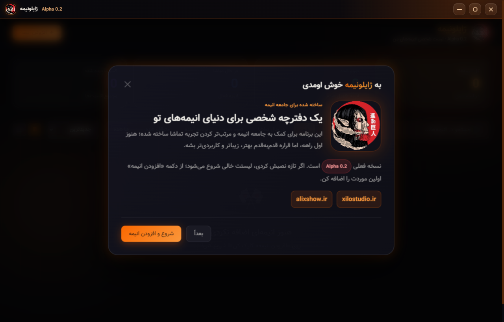
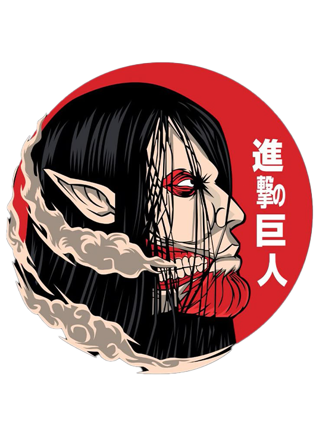

01
لیست شخصی انیمه
انیمهها را اضافه کن، وضعیت تماشا را مشخص کن و قسمتهای دیدهشده را نگه دار.
دفترچه شخصی انیمههای تو؛ سبک، فارسی، نصبشدنی و آماده برای اینکه لیست تماشا، وضعیتها و قسمتهای دیدهشده را مرتب نگه دارد.

ژایلونیمه برای استفاده روزمره ساخته شده؛ بدون شلوغی اضافه، اما با جزئیات بصری که حس محصول کاملتر را میدهد.
انیمهها را اضافه کن، وضعیت تماشا را مشخص کن و قسمتهای دیدهشده را نگه دار.
بعد از ورود، دادهها روی دیتابیس مشترک ذخیره میشوند و بین وب و دسکتاپ سینک میمانند.
فونت وزیر، متنهای فارسی و پشتیبانی از زبانهای فارسی، انگلیسی، روسی، چینی و ژاپنی.
بدون قاب خام ویندوز، همراه با کنترلهای سفارشی و آیکون اختصاصی ژایلونیمه.
فایل نصب مستقیم داخل سایت قرار نگرفته است. برای دریافت نسخهها و دیدن فایلهای منتشرشده، از GitHub Releases استفاده کن.

ژایلونیمه برای کمک به مرتبتر کردن تجربه تماشای انیمه ساخته شده. این نسخه هنوز اول راه است، اما پایهای برای نسخههای بهتر، زیباتر و کاربردیتر در آینده است.